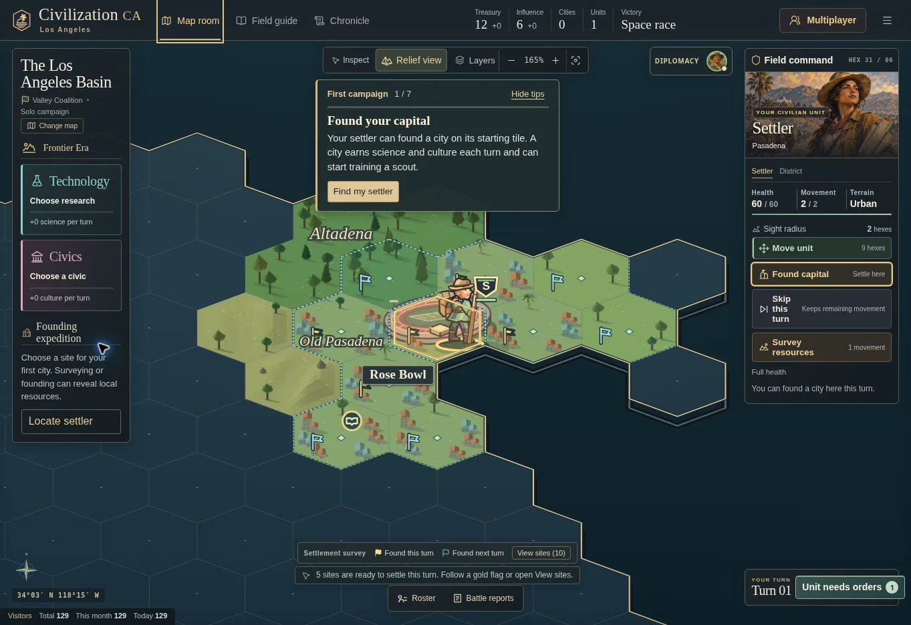

Los Angeles Basin
The Santa Monica Mountains rise above the basin. Find Topanga Canyon in the foothills and put citizens to work beside it for extra production and science.
Set up Los Angeles
Turn-based strategy in California
Found a city on the California coast. Send a scout beyond the hills, expand your borders and race your rivals into the next era.
Have a room code? Join a room
Field guide

Found your capital with the starting settler and send a scout to explore. A city needs 3 residents to train or buy another settler. One resident leaves with it.
The bottom-right button opens research, civics and idle cities. When a unit needs orders, move it or skip its turn.
Open Influence at the top of the map. Compare the natural growth forecast with spending 6 influence to take the next eligible district now.
Campaign atlas
Pick a region, then choose your map size, civilization and opponents in campaign setup. Each new opening charts its own rivers and lakes.
The Santa Monica Mountains rise above the basin. Find Topanga Canyon in the foothills and put citizens to work beside it for extra production and science.
Set up Los Angeles
Build a port on the bay or follow the shoreline south to its wetlands. Settle near the South Bay Salt Marshes to give neighboring workers extra food.
Set up San Francisco Bay
Develop the harbor along Coronado or explore the bluffs near La Jolla. Torrey Pines rewards adjacent worked districts with food and production.
Set up San Diego BayFrom the archive
This 17-second silent replay from an earlier edition follows the founding of Westwood, a scout expedition, the completion of UCLA and an enemy attack.